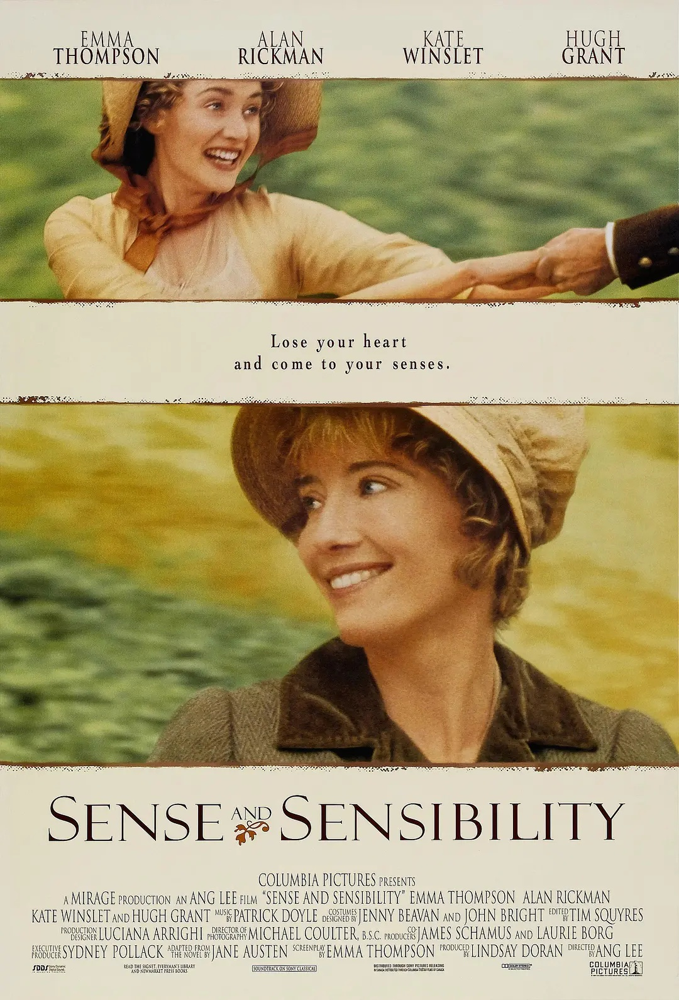
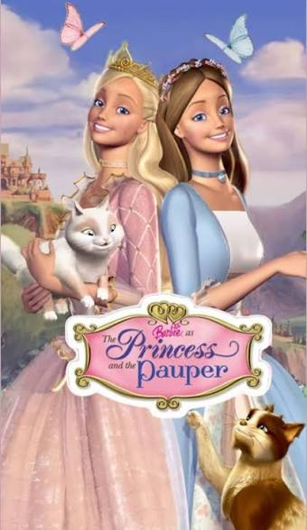
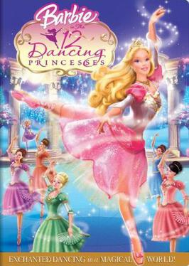
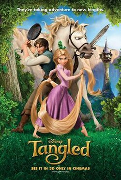
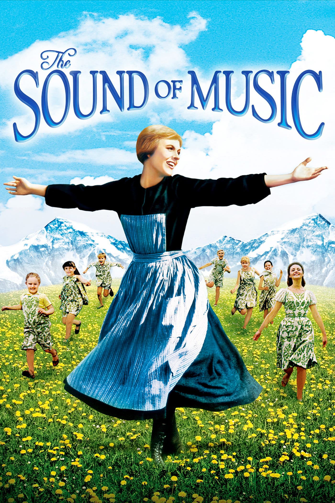
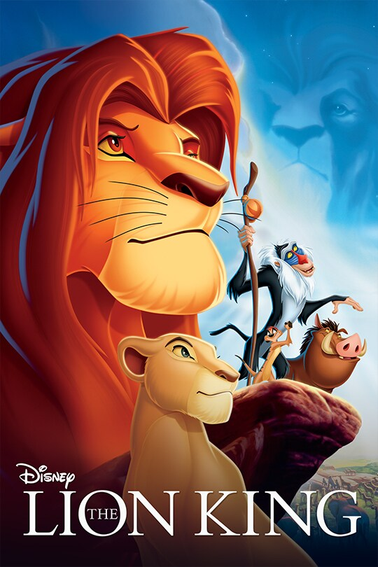
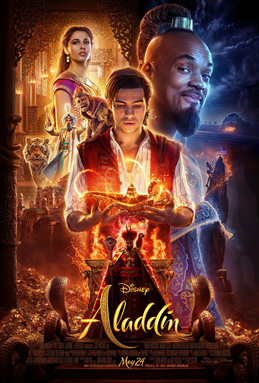

Movies Dear to Me
This is my curated collection of movies that I love and are dear to my heart. Each movie here either creates a core memory for me, shaped me as a person, or tells a story I believe is impactful. This collection showcases how responsive design allows me to adapt my content across all screen sizes.

Sense and Sensibility
Movie | 2005 | Jane Austen
Romantic, witty, and gripping to every fiber of your heart, this is hands-down my favorite adaptation of a Jane Austen novel. The film is beautifully writen, acted, and directed. It captures the complexity of relationships with such nuance and depth. It's a beautiful portrayal of love, family, and social expectations in Regency England that will inspire you to love better today.

Barbie: Princess and the Pauper
Movie | 2004 | Animation | Mattel
I first saw this movie when I was 6 years old. It's heartwarming tale of friendship, courage, and self-discovery touched me so much I continued watching it growing up. The songs are wonderful and it's a great movie for the whole family to enjoy together.

Barbie: 12 Dancing Princesses
Movie | 2006 | Animation | Mattel
This movie is also very nostalgic. It captures the essence of childhood dreams and imagination. Seeing this movie with my sisters inspired us to dance and have fun together.

Tangled
Movie | 2010 | Animation | Disney
This spin on the classic tale of Rapunzel is everything a movie could be. The animation is stunning, the characters are beyond lovable, and the story is both heartwarming and entertaining. As a child, I learned a lot about what it means to face the world with love and optimism and how to step into the unknown.

The Sound of Music
Movie | 1965 | Musical | 20th Century Fox
This beloved classic has been a family favorite since I can remember. My siblings and I wanted to be the Van Trapp children and we sang the songs with incredible passion and play!

The Lion King
Movie | 1994 | Animation | Disney
Watching this movie for the first time was an indescribable experience. I was shocked by how the creator blended color and song with such mature themes such as jealousy, murder, and isolation. It opened my eyes to writing my own stories that blend multiple tones into one masterpiece.

Aladdin
Movie | 2019 | Musical | Disney
No theatre experience tops this one. I don't think I blinked once while watching this movie. The quality of the visuals, dancing, music, comedy, and magical feeling gave me more excitement to tell stories than ever before. I think back on this moment whenever my dreams of storytelling seem too big.